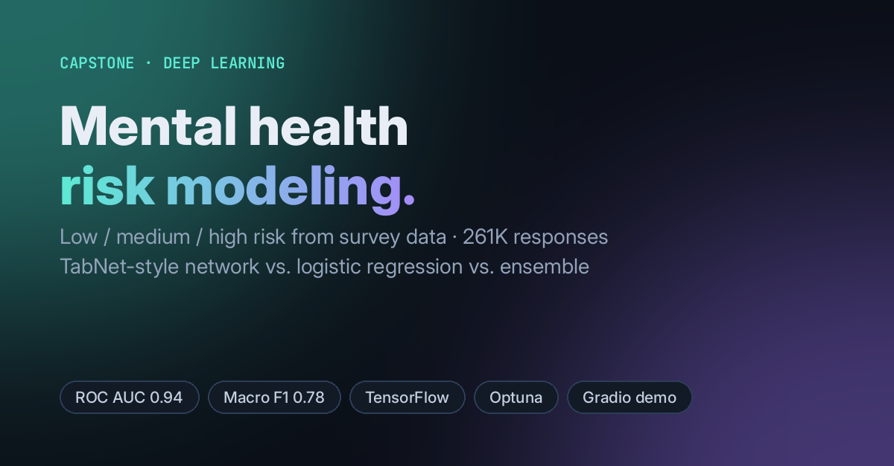

Capstone · Deep learning
Mental Health Risk Modeling (Capstone)
Can a short set of survey answers flag who is at low, medium or high risk, so outreach can start earlier? Risk labels came from K-Modes clustering, and the features that defined the clusters were removed before modeling to avoid label leakage.

- Data: 260,986 survey responses after cleaning, with 182,690 for training and 78,296 held out for testing.
- Best model: a TabNet-inspired tabular neural network, tuned over a 54-configuration grid, with 0.79 accuracy, 0.78 macro F1 and 0.94 ROC AUC.
- Compared: logistic regression with polynomial features and elastic net (0.84 AUC) and a soft-voting ensemble (0.93 AUC).
- Strongest signals: mood swings, coping struggles and treatment history.
- Demo: a Gradio app for interactive predictions.
- Course: AAI-590 Capstone, M.S. Applied AI (University of San Diego).
PythonTensorFlow/Kerasscikit-learnOptunaK-ModesGradio
View code on GitHub →